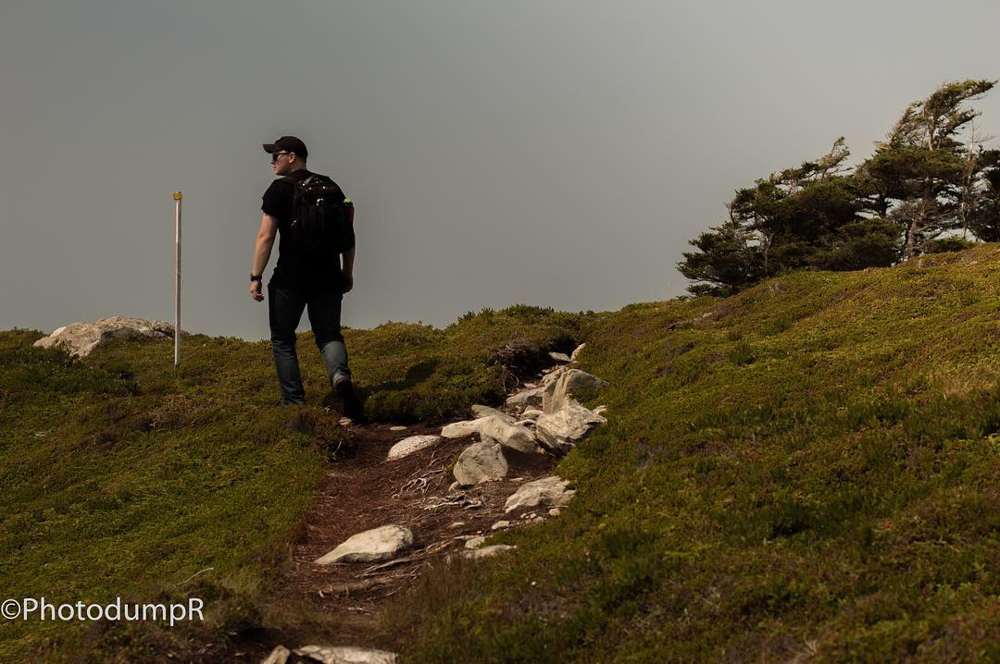

Hobbies
Past and Present Hobbies
This short list contains interests of mine that I either still practice, or have let go. One day, I hope to return to all of them, in some capacity.
Outdoors
On, and Off-Road
Motorcycles: In the summer of 2013, I earned an endorsement to pair with my general drivers license. In the back parking lots of NSCC and CBU, I was formally taught how to drive a motorcycle. The didactic and practical traning was fun, engaging, and short. I did, however, make a mistake. When we were learning how to transfer turns from left-to-right in a figure-eight formation, I hit a patch of dusty gravel and the bike slid out from underneath me. Thankfully, my leather and jeans protected my body. However, I did scrape a lot of skin off my leg. Finishing the course wasn't too difficult since I had the luxury of riding on all kinds of machines: dirt bikes, four-wheelers, some tractors, and so on. Once, when I was little, I also drove a zamboni. It's one of my favourite memories, to this day. After the course finished, I got my first bike: a 1980 Honda 450cc. The following year, I saved up, sold some of my possessions and then bought a 2007 Honda 750cc Shadow A.C.E., which is pictured in this section. I don't have my bikes anymore, and perhaps one day I may return to riding.
Videography and Photography
Videography: Aah! Photos in motion! Alike to the photography section below, I did love the artistic practice of videography. In my personal life, I've developed personal video projects to their completion; however, nothing I have is suitable for a general portfolio. One such example is a snowboarding montage that was shot using the GoPro camera that is seen in this section. Otherwise, I have enjoyed making edits of videos that I've seen; nothing grand, but just an actualization of the ideas which have occupied my mind. Second to photography, videography has been an arduous pleasure.
Photography: Alike to my cooking section later, photography allowed me to capture beautiful moments that I could share with others. When I go on my hikes, drives, or otherwise spend time in nature I love to capture moments that calm me, provoke thought, or otherwise are capturable moments that are worth sharing with those closest to me. I've never been asked, or volunteered, to do professional photography, but I always tried my best. With capturing RAW photos, I wanted to learn the skill of editing light, shadows, and other staples of photography. I watched many tutorials, and kept up my practices; however, one day came where I needed to sell my gear to pay bills. Some young boy recieved my camera for his birthday present, and I was sure to give him, and his father, whatever peripheral gear I had to support his new hobby. To this day, I still hope the camera is used with love, and the goal of sharing beautiful art.
Please, see my portfolio by clicking this link.
Mountains, Hills, and Trees
Snowboarding: When I was in paramedic college, my cousin, Seleina, introduced me to snowboarding.
When I was younger, in elementary school, I had some sporadic lessons; however, I never quite enjoyed the
mountain. As I became older, I yearned to learn as many skills as I could because of my love for auto-didactia.
Seleina taught me some basics,
and I used some at-home practices such as balancing on a car tire: my summer tires.
In one season, I went from beginner, to intermediate techniques. It was sometimes painful, but nonetheless, it was
fun. I used my videography skills to make a GoPro-style video of the outings her and I would have.

Hiking: Sightseeing: that's what I like the most. If convenient, I prefer to drive to sights, and walk minimally since my feet are a wreck (fallen arches). However, when my feet weren't so bad, I did like taking long walks, and hikes. I grew up walking trails in Cape Breton. From my backyard in Reserve Mines, I could walk to North Sydney, and everywhere else I'd like to go. The scenery is beautiful, and clean. I haven't been on those trails in years, but I hope they are still respected as they were when I grew up. The photo in this section was taken in Taylor Head Provincial Park. This park is my favourite spot for visiting. The crystal blue water, lush greenery, and wildlife, are all relaxing, captivating, enchanting, but also dangerous.
Camping: Alike to hiking, I enjoy camping in spots that I find beautiful. Though I am not opposed to camping in any season, given my military background, I do prefer the warmer months. Once I left the military and had saved up enough money, I decided to replicate the kit which the Queen had so graciously provided to me during my time in the military. Much of what I have is surplus, but some other things are luxury (called in the military: gucci kit). One element of camping, in particular, that I love, is staring into the soft flickering flames of a fire.

Training Birds: During the isolated COVID-19 months, that turned into years, I lost a lot of social contact. My family lived far away, while I stayed in the city to continue my undergraduate in the Psychology and Neuroscience department, along with my minor in the English department. The conviction I felt towards finishing what I started, despite my chronic illness, seeped into other domains. I wanted to survive, and thrive, in these dark, and lonely days. Like others, I couldn't simply have social contact like we had in the past, and in my apartment, there were no pets allowed. However, there was nothing written in my apartment contract about befriending birds. As of 2025, I've had several generations of birds visit me. It's quite heart-warming to have the parents that I've fed to bring me their offspring for visiting. Likewise, sometimes the birds will rest on my apartment patio rail when there are storms, or if they feel lonely. Our relationship was quite mutual, and to this day, I still enjoy befriending animals, which I find, for some reason, happens quite easily.
Indoors
Cooking
Baking: They aren't burned! I love baking, cooking, and producing high-quality meals
for myself, and guests. In my humble opinion: French, Italian, and Japanese, culinary
techniques, and dishes are superior to all others. Though, I do find that Candian styled pizza
is superior to that found in Italty (I've travelled there, and have tried their pizza).
The main driving-force behind my desire to learn some intermediate culinary practices was to ultimately
save money, and provide an excellent experience to those who visit me. Also, since my time in paramedic
college, and at Dalhousie, I began paying closer attention to what I was eating (reading ingredients).
I wasn't impressed with what I ate, so I decided to shift towards real food  rather than some
frankenstein ingredient list that would be most familiar with chemists, and not regular people.
I haven't gone back, and I like to think I achieved my goals: people are pleased with my cooking, and
so much so that I've been asked to be the chef during volunteer activities; finally, I did save money,
but the savings went into cast iron, a baking stone, and peripheral cooking tools. Ultimately, I look
forward to passing along the cooking, and baking skills, that I picked up from my late grandmother who
gave me my first job: Fat Boys Pizza in Dominion.
rather than some
frankenstein ingredient list that would be most familiar with chemists, and not regular people.
I haven't gone back, and I like to think I achieved my goals: people are pleased with my cooking, and
so much so that I've been asked to be the chef during volunteer activities; finally, I did save money,
but the savings went into cast iron, a baking stone, and peripheral cooking tools. Ultimately, I look
forward to passing along the cooking, and baking skills, that I picked up from my late grandmother who
gave me my first job: Fat Boys Pizza in Dominion.
Combat Sports
Brazilian Jiu-Jitsu: Starting in 2018, I joined a Brazilian Jiu Jitsu (BJJ) gym. Though I've been a team player for
many years (K-12), mainly hockey, I was left wanting something different. I enrolled at the Halifax gym, and stayed there for
several years before leaving due to my student budget not accomodating fees of attendance and travel.
Before I began my studies in BJJ, I
was before a student of mixed martial arts (MMA). I enjoyed it, but among the varied mixtures of schools, I tended towards
pure BJJ moreso than boxing, kick-boxing, wrestling, and otherwise.